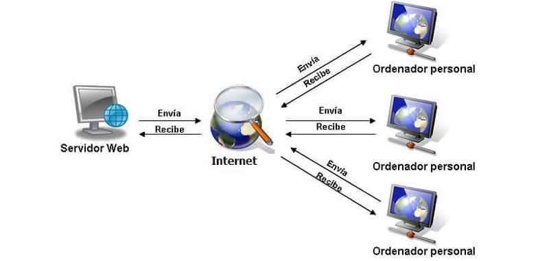

la wep
La Web es un lugar emocionante. Cada día procesa millones de transacciones financiaras, ofrece noticias de última hora y escandalosos rumores sobre famosos y proporciona un lugar de encuentro para todo tipo de comunidades, desde anarquistas políticos a seguidores de vampiros.
funcionamiento de la web
Al introducir una dirección en un navegador, un servidor recibe la petición de éste y devuelve la página correcta. En un sitio concurrido, está tarea básica puede requerir mucho trabajo. Como resultado, los servidores Web suelen ser ordenadores de capacidad industrial.
